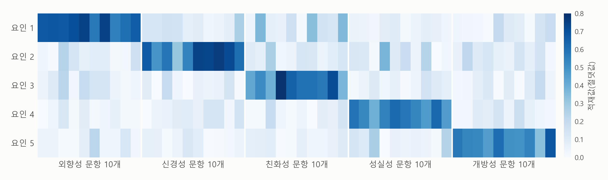

1. 보고서 — 성격 검사 50문항은 다섯 성격을 일관되게 측정하나#
이번 장의 주제는 설문으로 측정하기입니다. 만족도, 외향성, 직무 몰입, 브랜드 신뢰처럼 자를 대거나 개수를 셀 수 없는 개념을 설문 문항 여러 개로 측정하고, 그 측정을 믿을 수 있는지 확인하는 방법입니다. 연구 논문이나 수업 과제로 설문조사를 하는 학생이 많습니다. 경영학, 심리학, 사회학, 교육학의 설문 연구는 대개 이 단계를 거친 뒤에 회귀분석으로 넘어갑니다. 기업도 같은 일을 합니다. 고객 만족도 조사, 직원 몰입도 조사, 입사 지원자의 인성 검사가 모두 문항 여러 개로 보이지 않는 것을 측정합니다. 이런 연구의 보고서에는 흔히 “크론바흐 \(\alpha\) = 0.87”, “요인 적재값 0.4 이상” 같은 표현이 나옵니다.
이번 장이 묻는 것은 두 가지입니다. 설문 문항 여러 개로 변수 하나를 어떻게 만드는가, 그리고 그렇게 만든 변수를 믿어도 되는가입니다. 이번 장의 예시는 성격 검사입니다. 문항 10개의 답으로 한 사람의 외향성을 측정하는 예입니다.
데이터 — 온라인 성격 검사 19,718명#
자료는 Open Psychometrics Project라는 사이트의 공개 원자료입니다. 이 사이트는 누구나 무료로 해 볼 수 있는 성격 검사를 운영하면서, 응답자의 동의를 받아 답을 연구용으로 공개해 왔습니다. 이번 장의 자료는 2012년 무렵 그 사이트의 성격 검사에 답한 사람들의 기록이고, 사이트의 원자료 목록(openpsychometrics.org/_rawdata/)에서 BIG5.zip이라는 파일로 받을 수 있습니다. 2026년 10월 17일에 받았습니다. 이 자료에는 재배포를 허락하는 명시적인 이용 조건이 없어서, 이 책의 사이트에서는 파일을 함께 제공하지 않습니다. 원 사이트에서 직접 받으면 되고, 이 장 끝의 직접 해 보기 노트북도 원 사이트에서 바로 읽어 옵니다. 내려받는 일도 AI에게 부탁할 수 있습니다.
검사는 성격을 다섯 가지로 나눠 측정합니다. 외향성(extraversion), 신경성(neuroticism), 친화성(agreeableness), 성실성(conscientiousness), 개방성(openness)입니다. 심리학에서 흔히 쓰는 이 다섯 가지 구분을 빅 파이브(Big Five)라고 부릅니다. 신경성은 걱정이나 불안을 쉽게 느끼는 정도이고, 개방성은 새로운 생각과 경험을 좋아하는 정도입니다. 문항은 IPIP(International Personality Item Pool)라는, 누구나 쓸 수 있게 공개된 문항 모음에서 왔습니다. 성격마다 10문항, 모두 50문항입니다. 50문항을 모두 싣지는 않고, 표 1-1에 외향성의 10문항만 예로 보입니다(원래는 영어 문장이고, 우리말 번역은 이 책이 했습니다). 50문항 전체는 이 장 끝의 직접 해 보기 노트북에 우리말과 영어 원문으로 나란히 있습니다.
표 1-1. 외향성 10문항
문항 |
내용 |
|---|---|
E1 |
나는 모임의 분위기를 띄우는 사람이다. |
E2 |
나는 말이 많지 않다. |
E3 |
나는 사람들 사이에서 편안하다. |
E4 |
나는 뒤로 물러나 있는 편이다. |
E5 |
나는 먼저 말을 건다. |
E6 |
나는 할 말이 별로 없다. |
E7 |
나는 모임에서 여러 사람과 이야기한다. |
E8 |
나는 주목받는 것을 좋아하지 않는다. |
E9 |
나는 관심의 한가운데에 있어도 괜찮다. |
E10 |
나는 낯선 사람 앞에서 조용하다. |
응답자는 문항마다 자기에게 얼마나 맞는지를 1부터 5까지의 숫자로 답했습니다. 1은 “동의하지 않음”, 3은 “보통”, 5는 “동의”입니다. 이렇게 문장 하나를 주고 동의하는 정도를 몇 단계로 고르게 하는 방식을 흔히 리커트 척도(Likert scale)라고 부릅니다. 우리말 설문에서 자주 보는 “전혀 그렇지 않다, 그렇지 않다, 보통이다, 그렇다, 매우 그렇다”의 다섯 칸이 바로 이 방식입니다. 이름은 이 방식을 처음 쓴 심리학자에게서 왔고, 5점이나 7점이 가장 흔합니다.
표를 천천히 읽어 보면 이상한 점이 하나 보입니다. E1, E3, E5는 외향적인 사람이 “동의”할 문장인데, E2, E4, E6은 거꾸로 내향적인 사람이 “동의”할 문장입니다. 같은 외향성을 측정하는 문항인데 방향이 반대입니다. 이런 문항을 역문항(reverse-coded item)이라고 하는데, 왜 이렇게 만드는지와 분석할 때 무엇을 해야 하는지는 다음 절에서 다룹니다.
받은 파일에서 한 행은 응답자 한 명이고, 변수는 57개입니다.
E1 ~ E10, N1 ~ N10, A1 ~ A10, C1 ~ C10, O1 ~ O10: 50문항의 답(1 ~ 5, 답하지 않은 문항은 0). 앞 글자가 성격입니다(E 외향성, N 신경성, A 친화성, C 성실성, O 개방성).
age, gender, country 등 7개: 나이, 성별, 접속한 나라, 영어가 모국어인지, 어느 손으로 글씨를 쓰는지, 인종, 사이트에 들어온 경로
응답자는 19,719명이고, 이 가운데 50문항에 모두 답한 19,718명을 분석합니다. 접속한 나라는 미국이 8,753명으로 가장 많고 영국, 인도가 뒤를 잇습니다. 한국에서 접속한 사람은 30명으로, 나라 가운데 50번째입니다. 여성이 61%, 중위 나이는 22세입니다. 조사하는 쪽이 대상을 정해 뽑은 표본이 아니라 검사 사이트를 스스로 찾아온 사람들이라는 점은 기억해 둘 만합니다.
문항 10개로 외향성을 측정할 수 있을까#
자, 이제 질문입니다. 문항 10개에 답한 것으로 한 사람의 외향성을 측정할 수 있을까요?
외향성은 키나 몸무게처럼 자로, 저울로 측정할 수 있는 것이 아닙니다. 우리가 볼 수 있는 것은 “나는 먼저 말을 건다”에 4점을 줬다는 답뿐입니다. 그 4점에는 그 사람의 외향성도 들어 있지만, 문장을 어떻게 받아들였는지, 그날 기분이 어땠는지, 대충 찍었는지도 들어 있습니다. 그래서 설문 연구는 문항 하나만 쓰지 않고 같은 것을 묻는 문항을 여러 개 둡니다. 그렇다면 확인할 것이 생깁니다. 그 문항들이 정말 같은 것을 묻고 있는가, 응답자들의 답에서도 문항 50개가 성격별로 다섯 묶음으로 나뉘는가입니다. 이것을 확인하는 것이 이번 장의 일입니다.
이 질문을 AI에게 맡겨 봤습니다. AI가 이 장의 자료 파일을 열어 분석하게 하고, 거꾸로 묻는 문항의 답을 뒤집은 뒤 다섯 개의 성격 척도의 신뢰도와 요인분석 결과를 정리한 1쪽 보고서를 요청했습니다. 그렇게 받은 보고서가 아래에 있습니다. 먼저 한 번 읽어 보세요. 크론바흐 \(\alpha\), 요인 적재값, 베리맥스 회전처럼 처음 보는 말이 나와도 괜찮습니다. 이 장을 마치면 그 말들을 모두 이해할 수 있습니다.
AI가 만든 1쪽 보고서
성격 검사 50문항은 다섯 가지 성격을 일관되게 측정하나 — 온라인 응답자 19,718명 자료로 본 척도의 신뢰도와 요인분석
분석 대상: 온라인 성격 검사(IPIP 50문항, 성격마다 10문항, 5점 척도)에 50문항 모두 답한 19,718명 · 자료: Open Psychometrics Project 공개 원자료(2012년 무렵 수집)
요약
다섯 개의 성격 척도의 신뢰도(크론바흐 \(\alpha\))는 0.79 ~ 0.89로, 흔히 쓰는 기준 0.7을 모두 넘는다.
50문항으로 요인분석을 하면 모든 문항이 자기 성격의 요인에 가장 크게 실려, 문항이 성격별로 다섯 묶음으로 나뉜다.
두 결과는 응답자들이 같은 성격을 묻는 문항들에 일관되게 답했다는 뜻이다. 척도가 실제 성격을 맞게 측정하는지는 이 분석으로 알 수 없다.
신뢰도와 척도 점수
척도 |
문항 수 |
역문항 수 |
크론바흐 \(\alpha\) |
척도 점수 평균 |
표준편차 |
|---|---|---|---|---|---|
외향성 |
10 |
5 |
0.89 |
3.01 |
0.92 |
신경성 |
10 |
2 |
0.87 |
3.10 |
0.86 |
친화성 |
10 |
4 |
0.83 |
3.84 |
0.71 |
성실성 |
10 |
4 |
0.81 |
3.35 |
0.73 |
개방성 |
10 |
3 |
0.79 |
3.91 |
0.63 |
주: 1 = 동의하지 않음, 5 = 동의. 역문항(예: 외향성의 “나는 말이 많지 않다”)은 6에서 답을 빼서 뒤집은 뒤 계산했다. 척도 점수는 문항 10개의 평균(1 ~ 5)
요인분석

그림. 탐색적 요인분석(5요인, 베리맥스 회전)의 요인 적재값. 칸이 진할수록 그 문항이 그 요인과 강하게 함께 움직인다. 요인의 순서는 성격 순서에 맞춰 늘어놓았다.
주: 자기 요인 적재값 0.31 ~ 0.79, 다른 요인 적재값(절댓값)은 가장 큰 것이 0.37(성실성의 “나는 일을 엉망으로 만든다”가 신경성 요인에, 자기 요인에는 0.55), 다섯 요인이 설명한 분산 40%
해석
크론바흐 \(\alpha\) — 같은 척도의 문항끼리 함께 움직일수록 1에 가까워진다. 외향성 0.89는 외향성 문항 하나에 외향적이라고 답한 사람이 다른 외향성 문항에도 대개 외향적이라고 답했다는 뜻이다(역문항은 뒤집은 답으로).
요인 적재값 — 문항이 어느 요인과 함께 움직이는지를 보여 준다. 그림에서 진한 칸이 대각선 위에 다섯 묶음으로 모여 있다. 요인 수만 다섯으로 정해 주고 문항이 어느 성격인지는 알려 주지 않았는데, 자료가 문항을 성격별로 묶었다.
한계
응답자는 검사 사이트를 찾아온 자원자다(미국 44%, 중위 나이 22세). 나이가 많거나 다른 나라의 사람들이 답해도 신뢰도와 다섯 묶음이 이대로 나올지는 알 수 없다.
신뢰도가 높다는 것은 문항들이 함께 움직인다는 뜻일 뿐이다. 외향성 점수가 높은 사람이 실제로도 외향적인지는 이 자료로 알 수 없다.
같은 사람이 한 번에 50문항에 답했으므로, 답하는 버릇(무엇에나 “동의”하는 경향) 때문에 문항들이 실제보다 더 함께 움직인 것으로 보일 수 있다.
보고서 내려받기: PDF(그림 포함) · 원문(.md)
보고서의 다섯 부분#
보고서는 다른 장의 보고서처럼 다섯 부분으로 되어 있습니다. 요약, 신뢰도와 척도 점수의 표, 요인분석의 그림, 해석, 그리고 한계입니다.
요약은 세 줄입니다. 첫 줄은 다섯 척도의 신뢰도가 모두 0.79 ~ 0.89로 흔히 쓰는 기준 0.7을 넘는다는 것이고, 둘째 줄은 요인분석에서 50문항이 성격별로 다섯 묶음으로 나뉜다는 것입니다. 셋째 줄은 이 두 결과가 말하지 않는 것을 적었습니다. 응답자들이 문항들에 일관되게 답했다는 것과, 척도가 실제 성격을 맞게 측정한다는 것은 다른 이야기라는 것입니다.
신뢰도와 척도 점수의 표는 척도 하나가 한 행입니다. 열은 문항 수, 그 가운데 역문항 수, 크론바흐 \(\alpha\), 그리고 척도 점수의 평균과 표준편차입니다. 표 아래 주에는 역문항의 답을 어떻게 뒤집었는지와 척도 점수를 어떻게 만들었는지가 적혀 있습니다. 문항 10개의 답을 평균한 것이 한 사람의 척도 점수입니다.
요인분석의 그림은 가로로 50문항, 세로로 요인 다섯 개를 놓은 열지도(heatmap)입니다. 열지도는 숫자의 크기를 색의 진하기로 나타낸 그림이어서, 칸이 진할수록 그 문항이 그 요인과 강하게 함께 움직인다는 뜻입니다. 진한 칸이 왼쪽 위에서 오른쪽 아래로 계단처럼 다섯 묶음을 이룹니다. 그림 아래 주에는 적재값의 범위와 다섯 요인이 설명한 분산의 비율이 적혀 있습니다.
해석은 두 항목입니다. 크론바흐 \(\alpha\)가 무엇을 나타내는지와 요인 적재값으로 무엇을 보는지입니다. 한계는 세 줄입니다. 응답자가 어떤 사람들인지, 신뢰도가 높다는 것이 무엇까지 말해 주는지, 그리고 같은 사람이 한 번에 모든 문항에 답해서 생길 수 있는 문제입니다.
이 장의 진행 순서#
다음 네 절이 이 보고서를 한 부분씩 설명합니다.
문항 여러 개로 개념 하나를 — 외향성처럼 보이지 않는 개념을 왜 문항 여러 개로 측정하는가. 척도 점수는 어떻게 만드는가. 역문항의 답을 뒤집지 않으면 무슨 일이 생기는가. 표의 역문항 열과 주.
함께 움직이는가 — 크론바흐 \(\alpha\)는 어떤 숫자인가. 문항이 많을수록 \(\alpha\)가 왜 커지는가. 기준 0.7은 어디서 왔고 무엇을 말해 주지 않는가. 요약의 첫 줄과 셋째 줄, 표의 \(\alpha\) 열, 해석의 첫 항목, 한계의 둘째 줄.
저절로 다섯 묶음으로 나뉘나 — 요인분석은 무엇을 하는가. 적재값과 회전은 무엇인가. 보고서에서 만날 다른 이름들(확인적 요인분석, 구조방정식 모형). 요약의 둘째 줄, 그림, 해석의 둘째 항목.
측정이 거칠면 관계가 약해진다 — 문항 하나로 측정한 변수를 회귀식에 넣으면 무슨 일이 생기는가. 같은 사람이 같은 설문에 답한 두 변수의 관계는 믿을 수 있는가. 한계의 셋째 줄, 그리고 이 장을 마치며.
네 절을 지나면 이 보고서의 모든 줄을 이해할 수 있습니다. 그리고 여러분이 자기 설문 자료로 같은 분석을 요청할 때, 이 보고서가 본보기가 될 것입니다.